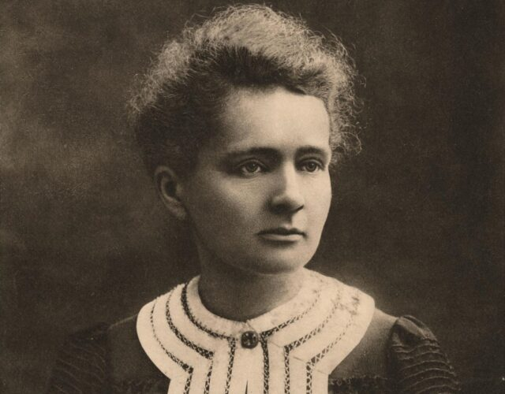

MARIE CURIE

Marie Curie (born November 7, 1867, Warsaw, Congress Kingdom of Poland, Russian Empire—died July 4, 1934, near Sallanches, France) was a Polish-born French physicist, famous for her work on radioactivity and twice a winner of the Nobel Prize. With Henri Becquerel and her husband, Pierre Curie, she was awarded the 1903 Nobel Prize for Physics. She was the sole winner of the 1911 Nobel Prize for Chemistry. She was the first woman to win a Nobel Prize, and she is the only woman to win the award in two different fields.
About the Legend
(2)She studied at Warsaw's clandestine Flying University and began her practical scientific training in Warsaw.
(3)In 1891, aged 24, she followed her elder sister Bronisława to study in Paris, where she earned her higher degrees and conducted her subsequent scientific work.
(4)In 1895, she married the French physicist Pierre Curie, and she shared the 1903 Nobel Prize in Physics with him and with the physicist Henri Becquerel for their pioneering work developing the theory of "radioactivity"—a term she coined.
(5)In 1906, Pierre Curie died in a Paris street accident. Marie won the 1911 Nobel Prize in Chemistry for her discovery of the elements polonium and radium, using techniques she invented for isolating radioactive isotopes.
(6)Under her direction, the world's first studies were conducted into the treatment of neoplasms by the use of radioactive isotopes.
(7)She founded the Curie Institute in Paris in 1920, and the Curie Institute in Warsaw in 1932; both remain major medical research centres.
(8)During World War I, she developed mobile radiography units to provide X-ray services to field hospitals.